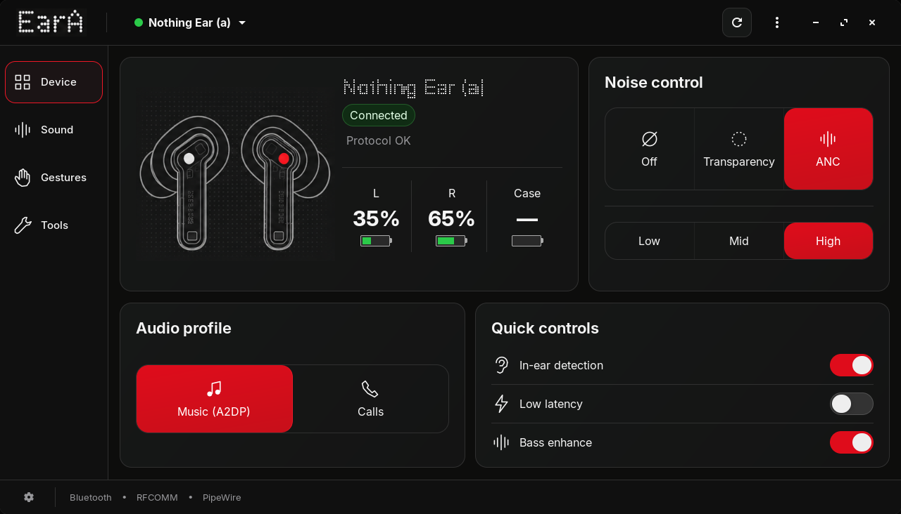
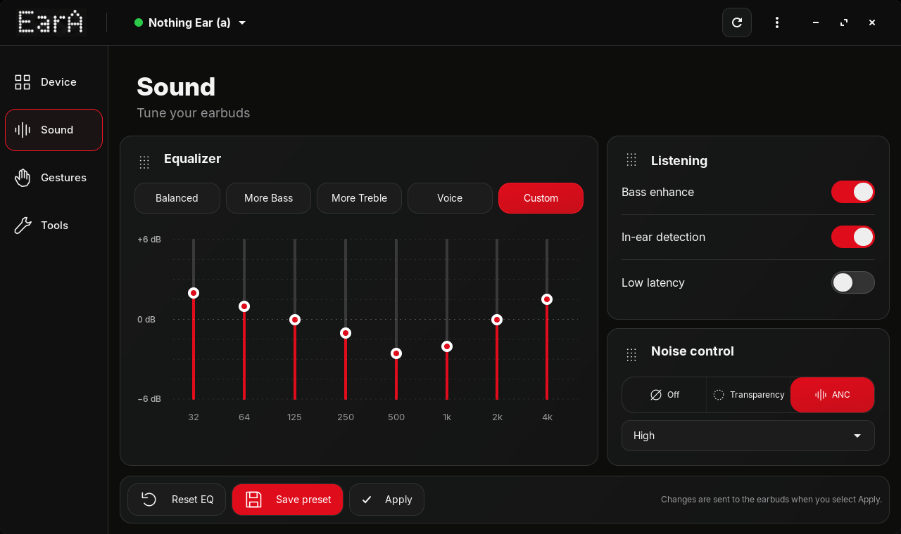

Connect reliably
Improved discovery, reconnection, state restoration, and practical diagnostics for Bluetooth and audio services.
Native GTK4 companion for Linux
Control Nothing and CMF earbuds from a focused desktop app built around the Linux Bluetooth and audio stack.
The real application
Native captures from the verified EarA 0.6 GTK interface.


Designed for daily use
Improved discovery, reconnection, state restoration, and practical diagnostics for Bluetooth and audio services.
ANC, transparency, bass, factory presets, and a corrected equalizer with synchronized controls.
Battery levels, gestures, in-ear detection, Find My Earbuds, codecs, and audio profile switching.
Install EarA
Use an AppImage, DEB, RPM, standalone Flatpak bundle, or install directly from source.